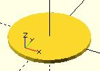

circle
Creates a circle at the origin. All parameters, except r, must be named.
circle(r=radius | d=diameter);
- Parameters
- r : circle radius. r name is the only one optional with circle.
- circle resolution is based on size, using $fa or $fs.
- For a small, high resolution circle you can make a large circle, then scale it down, or you could set $fn or other special variables. Note: These examples exceed the resolution of a 3d printer as well as of the display screen.
scale([1/100, 1/100, 1/100]) circle(200); // create a high resolution circle with a radius of 2. circle(2, $fn=50); // Another way.
- d : circle diameter (only available in versions later than 2014.03).
- $fa : minimum angle (in degrees) of each fragment.
- $fs : minimum circumferential length of each fragment.
- $fn : fixed number of fragments in 360 degrees. Values of 3 or more override $fa and $fs
defaults: circle(); yields: circle($fn = 0, $fa = 12, $fs = 2, r = 1);

equivalent scripts for this example circle(10); circle(r=10); circle(d=20); circle(d=2+9*2);
Created with the Personal Edition of HelpNDoc: Easily create Web Help sites